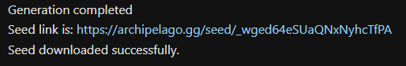

- Navigate to the seed generation page
- Click through the tabs and adjust your desired settings. Your choices are saved automatically as you go, so you won't lose them if you leave and come back later.
- When you're happy with your settings, click the "Finish" tab.
- Click "Generate Seed" to generate a seed using your chosen settings.
- If you'd like to save your settings to a file to keep or share, use "Save Settings" instead. You can later restore a saved settings file using the file picker next to it.
- Generating will open a new tab and prompt you to download your seed mod, which will be installed as a standalone mod in OpenKH.
- You'll also see a seed link appear in a new tab. You can view your spoiler log there if desired.
- If you plan on playing with client/server, you can use the same link to host a server on the Archipelago website to connect to in order to use remote items.

Next Step: Installing the Mod